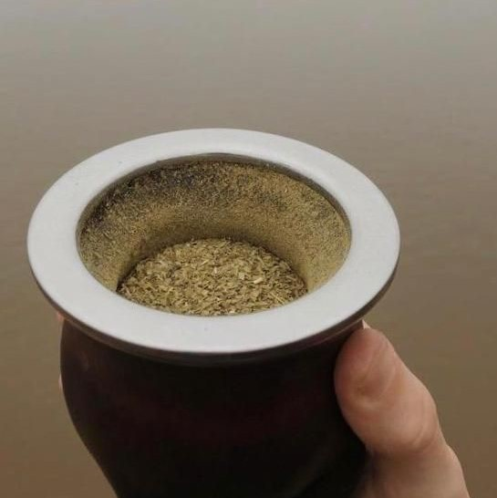
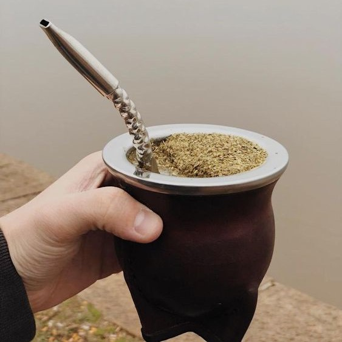

Tips Materos

como armar un mate
-
rellenar el mate con yerba hasta 3/4 del mismo
 -
tapar la boca del mate con la mano e inclinarlo a 45 para luego retirarla hacia arriba sin dejar de mantenerlo inclinado

-
colocar agua en el espacio creado en el lado opuesto a la montañita

-
colocar la bombilla en el espacio donde echamos agua

-
el mate ya esta listo para disfrutar
